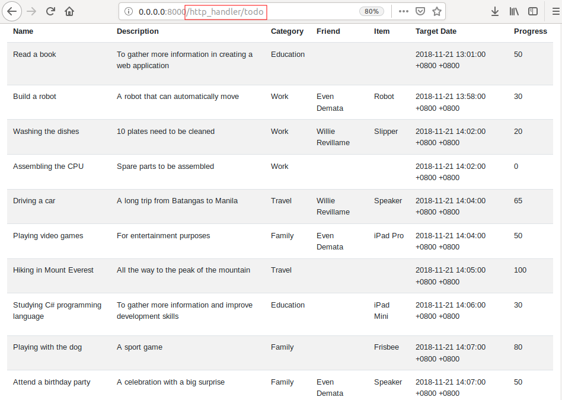

uAdmin Tutorial Part 12 - Storing the data to HTML¶
In this part, we will discuss about fetching the records in the API and migrating the data from API to HTML that will display the records using Go template.
Go to todo_handler.go inside the handlers folder with the following codes below:
package handlers
import (
"html/template"
"net/http"
"strings"
// Specify the username that you used inside github.com folder and
// import this library
"github.com/username/todo/models"
"github.com/uadmin/uadmin"
)
// TodoHandler !
func TodoHandler(w http.ResponseWriter, r *http.Request) {
r.URL.Path = strings.TrimPrefix(r.URL.Path, "/todo")
type Context struct {
TodoList []map[string]interface{}
}
c := Context{}
// ------------------ ADD THIS CODE ------------------
// Initializes mapTodo as a map[string]interface{}{} where you can
// create a dictionary that has a key and value from the database
mapTodo := []map[string]interface{}{}
// Fetch Data from DB
todo := []models.Todo{}
uadmin.All(&todo)
for i := range todo {
// Accesses and fetches the record of the linking models in Todo
uadmin.Preload(&todo[i])
// Assigns the string of interface in each Todo fields
mapTodo = append(mapTodo, map[string]interface{}{
"ID": todo[i].ID,
"Name": todo[i].Name,
"Description": todo[i].Description,
"Category": todo[i].Category.Name,
"Friend": todo[i].Friend.Name,
"Item": todo[i].Item.Name,
"TargetDate": todo[i].TargetDate,
"Progress": todo[i].Progress,
})
}
// Assigns mapTodo to the TodoList inside the Context struct
c.TodoList = mapTodo
// ----------------------------------------------------
// Some codes
}
Now go to views/todo.html. After the <tbody> tag, add the following codes shown below:
{{range .TodoList}}
<tr>
<td>{{.Name}}</td>
<td class="description-{{.ID}}"></td>
<td>{{.Category}}</td>
<td>{{.Friend}}</td>
<td>{{.Item}}</th>
<td>{{.TargetDate}}</td>
<td>{{.Progress}}</td>
</tr>
{{end}}
In Go programming language, range is equivalent to for loop.
The double brackets {{ }} are Golang delimiter.
.TodoList is the assigned field inside the Context struct.
.Name, .ID, .Category, .Friend, .Item, .TargetDate, .Progress are the fields assigned in mapTodo variable that stores in c.TodoList.
If you notice, we assigned the description class with an ID in the second table data to avoid conflicts when we store back-end HTML format description in Javascript.
Now inside the script field, declare a variable named “todolist” that has a value of {{.TodoList}}. This field comes from the context struct in todo_template.go. Afterwards, create a for loop that converts the description text string format to HTML format using JQuery.
<script src="https://code.jquery.com/jquery-3.4.1.js" integrity="sha256-WpOohJOqMqqyKL9FccASB9O0KwACQJpFTUBLTYOVvVU=" crossorigin="anonymous"></script>
<script>
var todolist = {{.TodoList}};
for(t = 0; t < todolist.length; t++) {
$(".description-"+todolist[t].ID).html(todolist[t].Description);
}
</script>
The integrity and crossorigin attributes are used for Subresource Integrity (SRI) checking. This allows browsers to ensure that resources hosted on third-party servers have not been tampered with. Use of SRI is recommended as a best-practice, whenever libraries are loaded from a third-party source. 1
Now run your application, go to http_handler/todo path and see what happens.
Congrats, now you know how to set up a handler file in an organized manner, access the HTML in localhost and store the data from API to HTML using Go templates.
In the next part, we will talk about generating a self-signed SSL certificate using the openssl command and implementing two factor authentication (2FA).
Reference¶
- 1
The jQuery Foundation (2019). Code Integration. Retrieved from https://code.jquery.com/